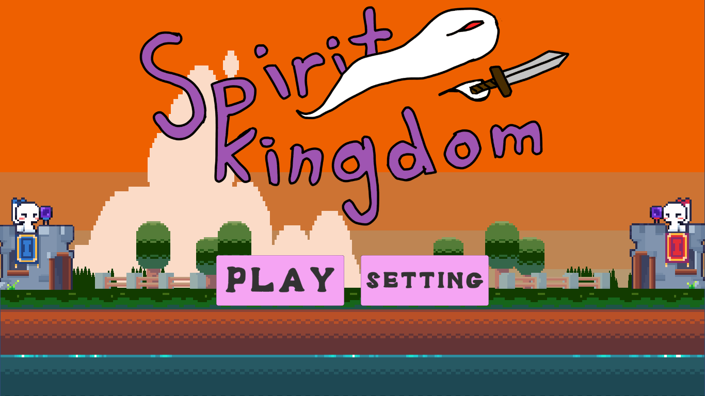

My Finished Projects:
My First Game

play
This game was made by me along with 2 friends, each of worked together on this game and even tho it isn't the best quality or quite finnished it was excelent practice, allowing me and my friends to learn a lot. The game was made using Unity and Krita for some of the art
My First Song

This being the first song ive made, I intended it to be a practice and to challenge my self musicly using FL Studio.
My Space Account
My website

I made this site so I can have a place to log my projects and to be a refrence of my skills to other companies. I also made it so people can fine all my media links and find more of my projects. Ive found building this site very fun and a good challenge. I will continue to edit this site as I grow and complete more projects